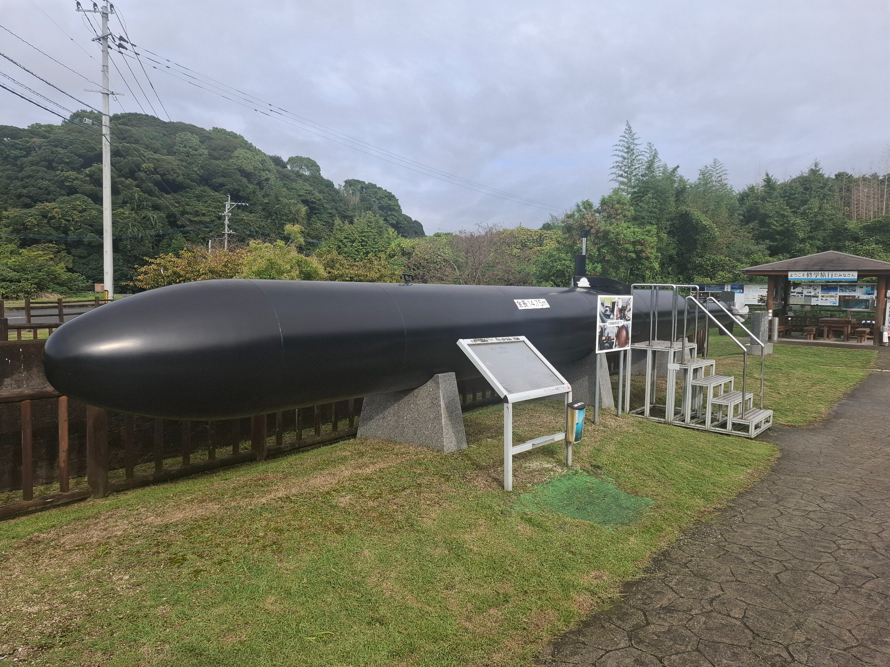
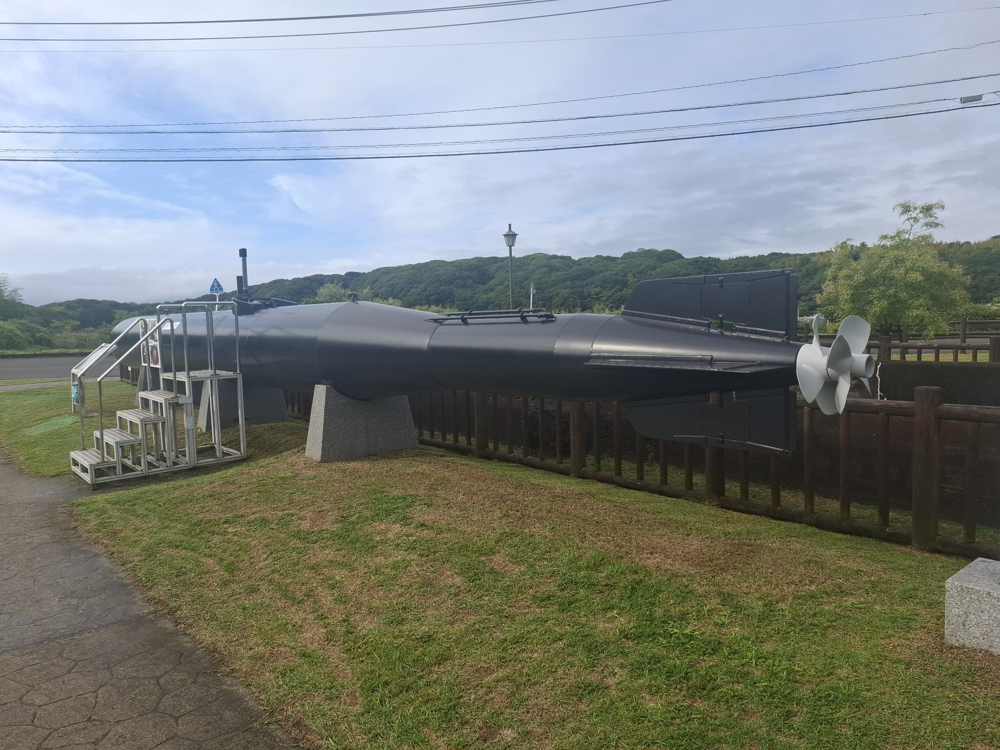
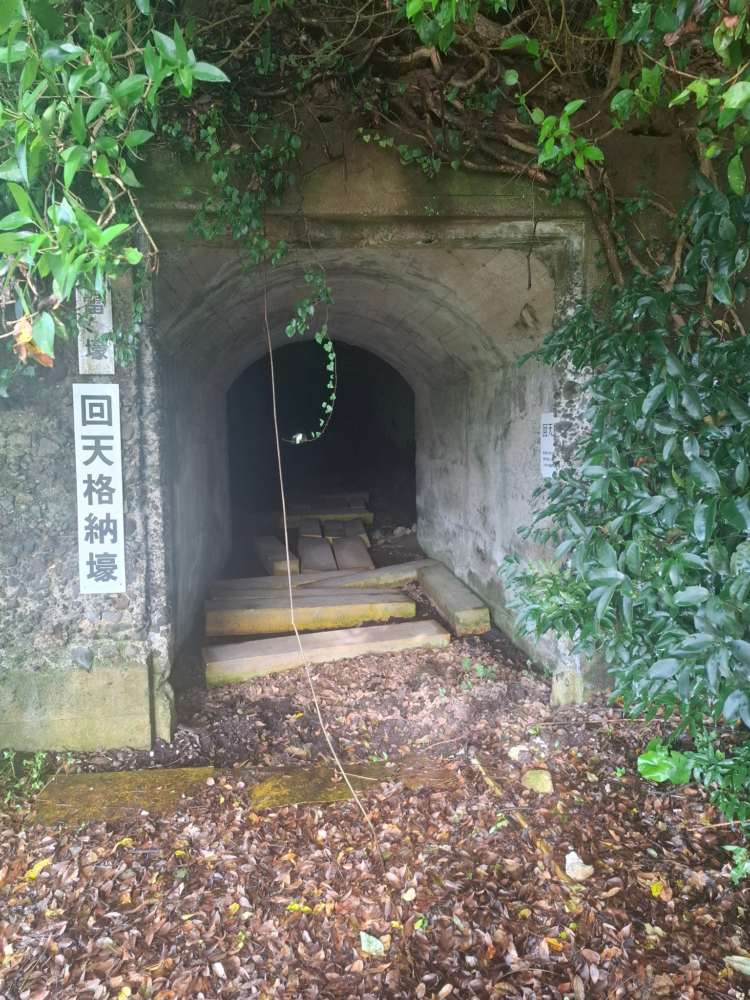
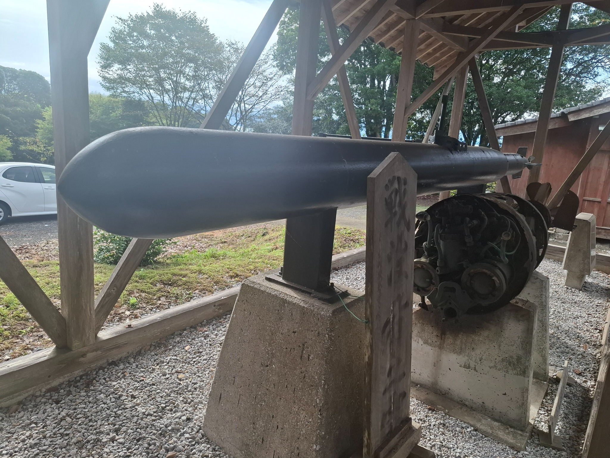
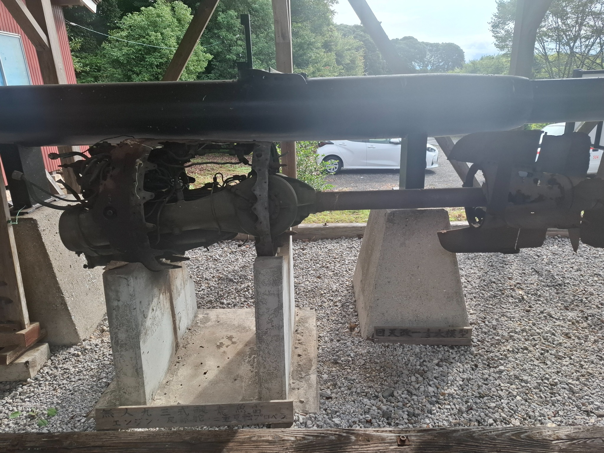

Oga Kaiten Memorials
| Location | 5489 Oga, Hiji, Hayami District, Oita 879-1504, Japan |
|---|---|
| Visited | 5 Oct 2026 |
| Website | Oga Kaiten Memorials |

Museum Report
I found it confusing researching this museum, and it wasn’t until I got there that I realised that this was in part because there are two different memorials right next door to each other.
The Kaiten Oga Training Base Memorial Park is on the location of a former WW2 Kaiten training centre near Beppu Bay on the eastern coast of Kyushu. The nearest town is Oga. There are numerous remnants of the site still in existence, including tunnels and earthworks, and a memorial park has been established with fairly extensive information boards (all in Japanese) plus a full-size replica of a Kaiten.


Just across the road, on the top of a small hill, is the Kaiten Shrine, which appears to be a traditional temple dedicated to the Kaiten crews. Once again there are information boards around (again all in Japanese), along with a 1/3 size replica of a Kaiten, and the remains of a Kaiten after-body.


These places are not that accessible – there is no public transport available in the area, and the nearest train stations (which only have hourly local trains) are about 5km away. To get there, you need to go to one of the stations, hope that there is a taxi available, and then negotiate with the taxi driver to take you there, wait while you walk around, and then take you back to the station (since you would never find a taxi at the site). The taxi fare for this worked out at around 5000 yen (approx. AUD$50). For the first time in Japan, I think I would have been better off renting a car for the day and driving there myself.
If you are wanting to see a Kaiten training base, you would be better off going to the Shunan base off Tokoyama, as it is in much better condition, and has a lot better information displays.